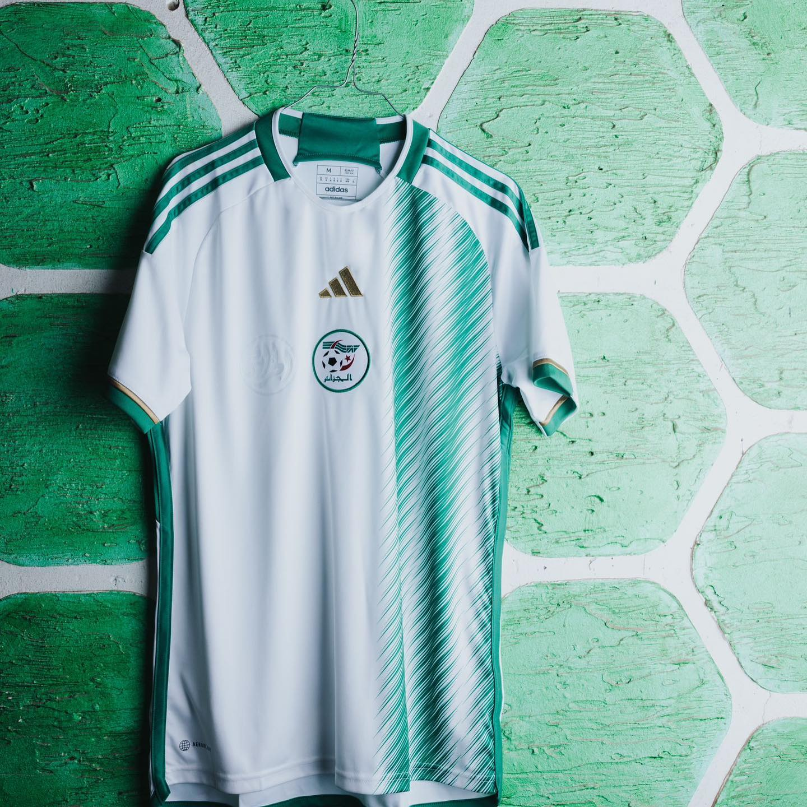
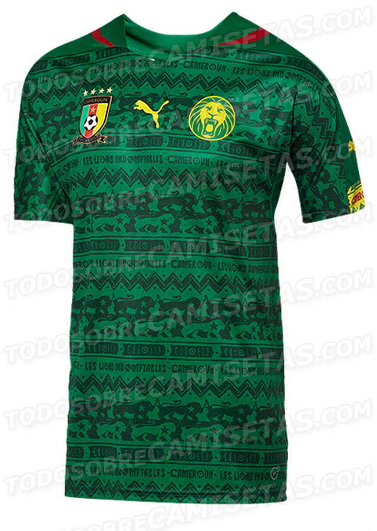
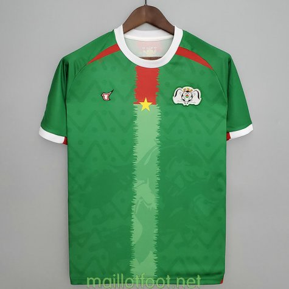
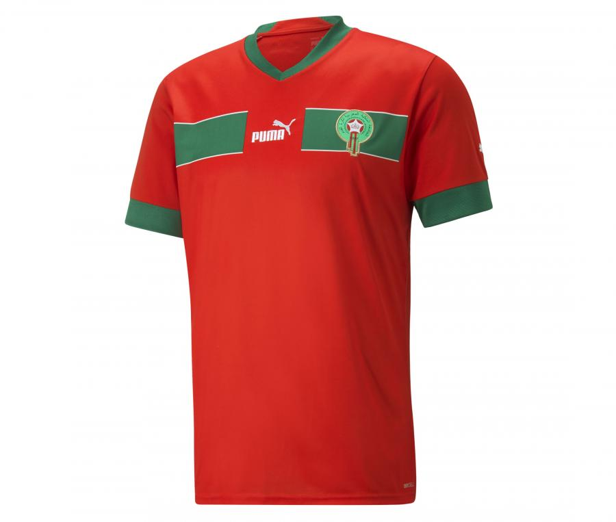
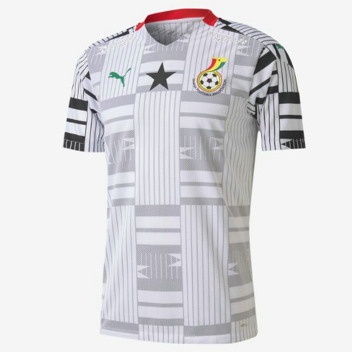
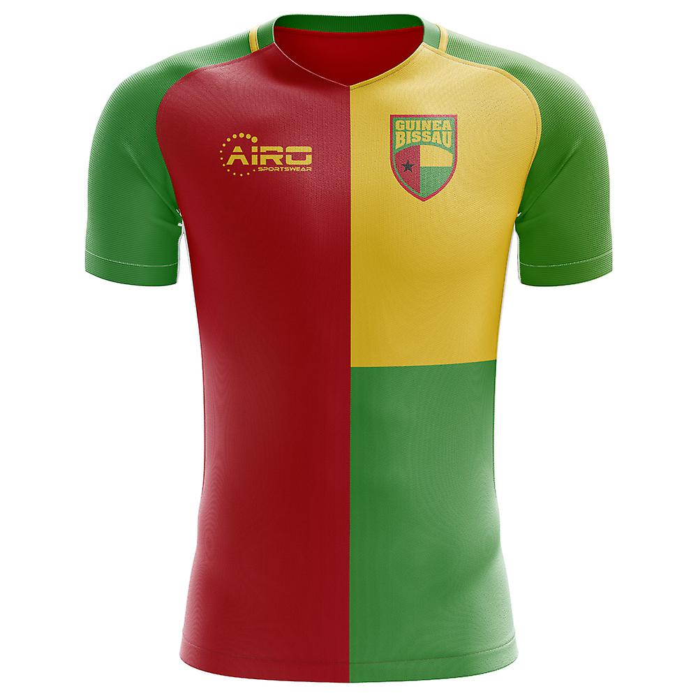
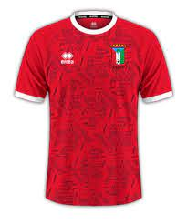

La Côte d'Ivoire (les Elephants)a remporté à deux reprises la Coupe d'Afrique des nations (CAN), en 1992 et 2015,
en battant à chaque fois le Ghana aux tirs au but. Elle compte en 2019 23
qualifications pour la phase finale de la compétition continentale (seule l'Égypte a fait mieux)
et huit podiums.

La sélection algérienne détient le record de matchs sans défaites d'affilée (35 matchs, 27 victoires et 8 nuls)
ce qui devient la sélection qui détient la plus grande série d'invincibilité sur le continent africain.en 19 participation à la
CAN l'Algerie compte 2 medailles d'or

Les Lions Indomptables sont la sélection de joueurs camerounais représentant le pays lors des compétitions
internationales de football masculin, sous l'égide de la Fédération Camerounaise de Football (FECAFOOT). en 20 participation
elle remporte 5 fois la competition

L'équipe du Burkina Faso de football est constituée d'une sélection des meilleurs joueurs burkinabè .
L'équipe nationale fut nommée l'équipe de Haute-Volta de football jusqu'en 1984. En 12 participation ils n'ont jamais
eu la chance d'etre sur le toit de l'afrique , finaliste perdant en 2013.

classée 10e au classement FIFA en avril 1998 , plus qu’un exploit pour une équipe africaine.
Elle est aussi la seule équipe africaine à s’être classée première du classement africain pendant trois ans d’affilée.
une seule fois medaille d'or en 15 participations elle arrive a atteindre une demi-finale de coupe du monde 2022

Le Ghana a remporté la Coupe d'Afrique des nations à quatre reprises en 1963, 1965, 1978 et 1982 en 23
participation, et détient en 2014 le record du nombre de finales disputées (8)

novice en phase finale , la guinée bissau ne compte que 3participation donc la première en 2017,
historique car elle sortait des matchs de qualifications sur 3victoires 1 nul et 2 defaites auj a sa quatireme participation
elle apparait quand meme comme un veritable outsiders dans cette quete en terre ivoirienne avec un bel effectif patriote

Classé 19e africain et 92e mondial par la FIFA en septembre 2023, la Guinée-Équatoriale est une sélection modeste
en Afrique. Pourtant, en trois participations à la CAN , Quart de finaliste en 2012 et 2021, la Guinée Equatoriale termine 4e en
2015.le Nzalang National espère passer le cap des quarts de finale en Côte d’Ivoire.